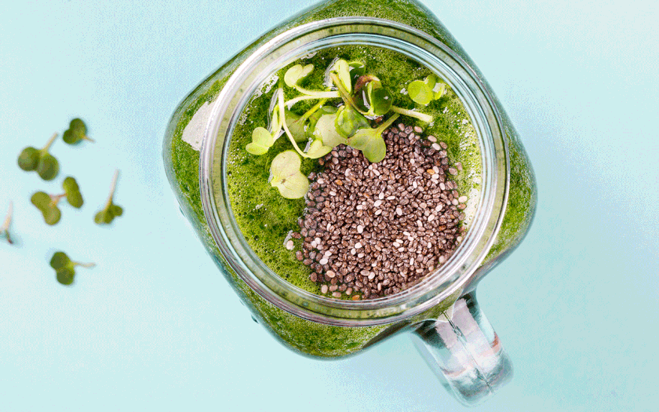
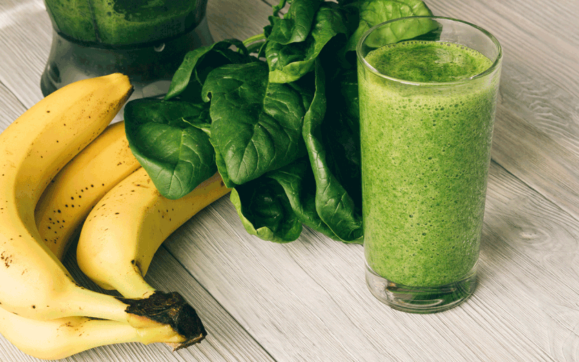

Tisztít, frissít, méregtelenít: a legjobb zöld turmixok tavaszra
Itt a tavasz, már egyre többször süt ki a nap, kizöldül a természet és a piacokat elárasztják a szebbnél szebb friss zöldségek és lassanként a gyümölcsök is. A hosszú téli hónapok alatt kimerült vitamin- és ásványianyag-raktárainkat most végre feltölthetjük. A töltekezés egyik legegyszerűbb módja, ha a napi étrendünkbe beiktatunk egy jó kis zöld turmixot.
Sokszor reggelire ajánlják a zöld turmixot. Ezt nyilván olyanok tanácsolják, akik nem szoktak reggelizni. Nekik több, mint elegendő egy turmix napindítónak, aki azonban kásákhoz vagy ne adj isten egy jó kis szalonnás rántottához szokott, annak egy zöld smoothie reggelire elég kiábrándító alternatíva. A keményvonalas reggelizők többnyire már akkor továbbkattintanak, mikor ezt meglátják, pedig nem kéne. Legyen tehát mostantól a zöld turmix egy délelőtti vitaminbomba vagy egy felpezsdítő délutáni finomság.
Az arányok betartása a lényeg
A jó hír, hogy bármit tehetünk bele, ami szeretünk, vagy ami éppen van otthon. A kombinációknak csak a képzeletünk szabjon határt. Van azért egy alapképlet, de az csak afféle sorvezető, ami szerintem még jól is jön. Az arányok betartása a lényeg csupán. Egy jó kis zöld turmixhoz szükségeltetik:
- 2 pohár zöld leveles vagy zöld színű zöldség
- 3 pohár nyers gyümölcs
- 2 pohár folyékony hozzávaló
Ezen kívül kedvünkre fűszerezhetünk, vagy akár fel is turbózhatjuk a turmixunkat különböző szuperélelmiszerekből készült porokkal, például nyers kakaóporral, kendermagporral, macaporral vagy akár spirulina algával is.
Akinek megjött a kedve a zöld smoothie készítéséhez, de egyelőre semmi ötlete, hogy fogjon hozzá, mit turmixoljon bele, annak itt van három remek tavaszias összeállítás.

Az egyszerű verzió
Ebben a zöld turmixban tényleg nincs semmi különös, kivéve a zöld hozzávalót. A zsázsa egy nálunk is ismert, ám ritkán fogyasztott növény. Pedig a zsázsa igazi vitaminbomba. Jelentős C- és B-vitamin, valamint karotintartalma, és nagy mennyiségben tartalmaz különböző ásványi sókat, foszfort, jódot, káliumot, kalciumot, nátriumot és vasat. De ami a legjobb benne, hogy hamar megnő, vetés után már 2-3 héttel szedhető és fogyasztható, ráadásul rém igénytelen, szóval a kezdőkonyhakertészeknek és ablakpárkány-kert tulajdonosoknak is ideális választás az első próbálkozásaik egyikének.
Hozzávalók:
- 2 pohár zsázsa
- egy pohár alma felkockázva
- egy pohár banán felkockázva
- egy pohár avokádó felkockázva
- 2 pohár mandulatej
- 1 evőkanál chia mag
A tejes verzió
Na, ez egy furcsa dolog. Én eddig mindig azt tapasztaltam, hogy a zöld turmix általában teljesen növényi alapon készül. De, mint az alábbi recept is mutatja, a tejtermékek rajongóinak sem kell kompromisszumot kötniük. Ebbe a pikáns kis zöld turmixba ráadásul kétféle tejtermék, kefir és író is kerül.
Hozzávalók:
- 1 pohár író
- 1 pohár kefir
- 1 pohár banán felkockázva
- 2 pohár fagyasztott gyümölcs
- 2 pohár kel-levél
- 1 pohár pitypanglevél

A hardcore verzió
A klasszikus zöld turmix ilyen. Haragoszöld, csípős, fűszeres, csak enyhén édes a bele kerülő gyümölcsöktől, és vízzel hígul. A zöld turmix készítése esetén is prioritást élvez a szezonális alapanyag, mert az a legjobb a szervezetnek. Az alábbi összeállítás a zsenge tavasz ízeit rejti magában. Tisztít, frissít, méregtelenít.
Hozzávalók:
- ½ pohár friss koriander levél
- 1 pohár baby spenót
- ½ pohár kígyóuborka felkockázva
- 1 pohár banán felkockázva,
- 2 pohár körte felkockázva,
- 2 evőkanál citromlé,
- ½ teáskanál friss gyömbér reszelve,
- 2 pohár víz
Az elkészítés módja mindhárom esetben ugyanaz. Tegyük a hozzávalókat a turmixgépbe, és alaposan turmixoljuk össze.
Fotók: Getty Images
Szólj hozzá! ( komment)Kommentek:
A hozzászólások a vonatkozó jogszabályok értelmében felhasználói tartalomnak minősülnek, értük a szolgáltatás technikai üzemeltetője semmilyen felelősséget nem vállal, azokat nem ellenőrzi. Kifogás esetén forduljon a szerkesztőséghez. Részletek az adatvédelmi tájékoztatóban.